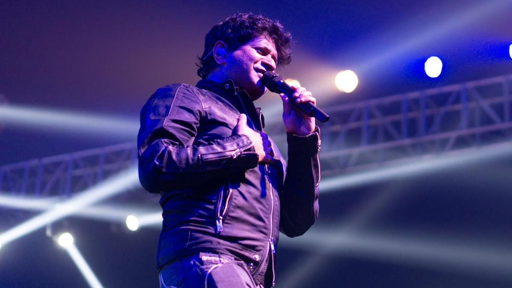

Krishnakumar Kunnath (popularly known as KK, K.K. or Kay Kay) is an Indian singer. He is a prominent singer in Hindi, Tamil, Telugu, Kannada, Malayalam, Marathi, Bengali and Gujarati languages films.[1] KK is noted for his clear and soothing voice; broad vocal range and noteplay. He is considered as one of the most versatile singers of India.
Personal Life
Born in Delhi to Hindu Malayali parents C. S. Menon and Kunnath Kanakavalli,Krishnakumar Kunnath was brought up in New Delhi. KK sang 3,500 jingles before breaking into Bollywood. He is an alumnus of Delhi's Mount St Mary's School and graduated from Kirori Mal College,Delhi University. He sang in the "Josh of India" song for the support of Indian Cricket Team during Cricket World Cup of 1999. This song featured members of the Indian Cricket Team
KK married his childhood love Jyothy in 1991. His son Nakul Krishna Kunnath sang a song "Masti" from his latest album Humsafar with him.KK also has a daughter named Tamara Kunnath who, according to KK, loves playing piano. KK says that his family is his source of energy.
Playback Singing
In 1994, he gave his demo tape to Louis Banks, Ranjit Barot and Lesle Lewis to get a break in the music arena. He was called by UTV and he sang a jingle for Santogen Suiting ad.[10] In a span of four years, he has sung more than 3,500 jingles in 11 Indian languages. He got the first break in Mumbai from UTV to sing jingles. He considers Lesle Lewis as his mentor for giving him his first jingle to sing in Mumbai.[9] KK was introduced as a playback singer with A. R. Rahman's hit song "Kalluri Saaley" and "Hello Dr." from Kadir's Kadhal Desam and then "Strawberry Kannae" from AVM Productions's musical film Minsara Kanavu (1997).[13] Pritam Chakraborty is also a fan of him.[citation needed] He got his Bollywood break "Tadap Tadap" from Hum Dil De Chuke Sanam (1999).[13] However, prior to this song he had sung a small portion of the song "Chhod Aaye Hum" from Gulzar's Maachis. Till now, KK has sung more than 500 songs in Hindi and more than 200 songs in Telugu, Bengali, Tamil, Kannada and Malayalam languages.[14] He has worked with almost every music director of Hindi film industry active from 1999. He has lent his voice to the biggest hit song of the year 2014 "Tune Maari Entriyaan" among several others in Gunday. KK's new song from the movie Bajrangi Bhaijaan called "Tu Jo Mila" has become popular, many times remained No.1 on iTunes.[citation needed] Guinness World Record holder Kumar Sanu who reigned as the top playback singer during the 1990s, has mentioned in several interviews that from the new generation of singers he admires KK. Popular singer Arijit Singh said he has been inspired by KK in singing, and is a big fan of KK.[citation needed] Another popular Bollywood singer, Ankit Tiwari also said he has been greatly influenced by KK and he takes KK as his idol and inspiration.
